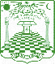

Eighty years of Scottish Freemasonry · Mumbai 1946 — Bangalore today
Lodge Al-Ameen No. 1412 was constituted on 7 February 1946 in Mumbai (then Bombay), chartered under the Grand Lodge of Antient, Free and Accepted Masons of Scotland — part of a Scottish Masonic tradition in India stretching back to the early nineteenth century.
The Lodge's register opens with a distinguished name: His Highness Sir Sayed Raza Ali Khan, the Nawab Saheb of Rampur, enrolled as the first founding member on 11 January 1946 — weeks before the Lodge was formally constituted. In the decades since, the Lodge has continued to draw men of standing and character from diverse professions and communities.
On 19 November 2010 the Lodge's warrant was transferred from Mumbai to Bangalore — a move accomplished with the help of Brother Pervez Bativala — and the installation meeting was held at Freemasons' Hall on Primrose Road, where the Lodge has met ever since as the only Lodge in the city working under the Scottish Constitution.
His Highness Sir Sayed Raza Ali Khan, Nawab Saheb of Rampur, is enrolled as the first founding member of the Lodge.
Lodge Al-Ameen No. 1412 is constituted in Mumbai under the Grand Lodge of Scotland.
The warrant is transferred to Bangalore with the help of Brother Pervez Bativala, and the installation meeting is held at Freemasons' Hall, Primrose Road — making Al-Ameen the city's sole Scottish Constitution Lodge.
When the original Freemasons' Hall was redeveloped, the Craft retained a dedicated portion of the premises — and the Lodge's meetings continued without interruption, carrying an unbroken tradition into new walls.
Eighty years from its founding, Lodge Al-Ameen continues to meet regularly, welcome visiting brethren from around the world, and uphold the values of Scottish Freemasonry in Bangalore.